QIIME2¶
Anticipated workshop duration when delivered to a group of participants is 4 hours.
For queries relating to this workshop, contact Melbourne Bioinformatics (bioinformatics-training@unimelb.edu.au).
Overview¶
Topic¶
- Genomics
- Transcriptomics
- Proteomics
- Metabolomics
- Statistics and visualisation
- Structural Modelling
- Basic skills
Skill level¶
- Beginner
- Intermediate
- Advanced
This workshop is designed for participants with command-line knowledge. You will need to be able to ssh into a remote machine, navigate the directory structure and scp files from a remote computer to your local computer.
Description¶
What is the influence of genotype (intrinsic) and environment (extrinsic) on anemone-associated bacterial communities?
Data: Illumina MiSeq v3 paired-end (2 × 300 bp) reads (FASTQ).
Tools: QIIME 2
Pipeline:
Section 1: Importing, cleaning and quality control of the data
Section 2: Taxonomic Analysis
Section 3: Building a phylogenetic tree
Section 4: Basic visualisations and statistics
Section 5: Exporting data for further analysis in R
Learning Objectives¶
At the end of this introductory workshop, you will:
- Take raw data from a sequencing facility and end with publication quality graphics and statistics
- Answer the question What is the influence of genotype (intrinsic) and environment (extrinsic) on anemone-associated bacterial communities?
Requirements and preparation¶
Important
Attendees are required to use their own laptop computers.
At least one week before the workshop, if required, participants should install the software below. This should provide sufficient time for participants to liaise with their own IT support should they encounter any IT problems.
Required Software¶
Mac Users: No additional software needs to be installed for this workshop.
Windows Users:
1. A terminal emulator such as PuTTY(free and open-source) will need to be downloaded.
2. Software for file transfers between a local computer and remote server such as WinSCP or FileZilla.
Required Data¶
-
No additional data needs to be downloaded for this workshop. It is located in the directory
raw_datalocated in the home directory of the Nectar instance that you will log in to. -
If you wish to analyse the data independently at a later stage, it can be downloaded from:
Mode of Delivery¶
This workshop will be run on a Nectar Instance. An “Instance” is Nectar terminology for a virtual machine running on the Nectar Cloud OpenStack infrastructure. An “Instance” runs on a “compute node”; i.e. a physical computer populated with processor chips, memory chips and so on.
You will be given an individual IP address and password to log on to using the SSH client tool on your computer (Terminal on Mac or PuTTY on Windows).
ssh ubuntu@ip-address
Should you wish to do this tutorial at a later stage independently, it is possible to apply for your own instance directly through a Nectar allocation. There are also many helpful Nectar Research Cloud tutorials.
Author Information¶
Written by: Ashley Dungan and Gayle Philip
School of Biosciences, University of Melbourne; Melbourne Bioinformatics
Created/Reviewed: May 2021
Background¶
What is the influence of genotype (intrinsic) and environment (extrinsic) on anemone-associated bacterial communities?
The Players¶
-
Exaiptasia diaphana - a shallow-water, marine anemone that is often used in research as a model organism for corals. In this experiment, two genotypes (AIMS1 and AIMS4) of E. diaphana were grown in each of two different environments:
- sterile seawater OR
- unfiltered control seawater
-
The anemone-associated bacterial communities or microbiome - these bacteria live on, or within E. diaphana, and likely consist of a combination of commensals, transients, and long-term stable members, and combined with their host, form a mutually beneficial, stable symbiosis.
The Study¶
The anemone microbiome contributes to the overall health of this complex system and can evolve in tandem with the anemone host. In this data set we are looking at the impact of intrinsic and extrinsic factors on anemone microbiome composition. After three weeks in either sterile or control seawater (environment), anemones were homogenized and DNA was extracted. There are 23 samples in this data set - 5 from each anemone treatment combination (2 genotypes x 2 environments) and 3 DNA extraction blanks as controls. This data is a subset from a larger experiment.
Dungan AM, van Oppen MJH, and Blackall LL (2021) Short-Term Exposure to Sterile Seawater Reduces Bacterial Community Diversity in the Sea Anemone, Exaiptasia diaphana. Front. Mar. Sci. 7:599314. doi:10.3389/fmars.2020.599314 [Full Text].
QIIME 2 Analysis platform¶
Quantitative Insights Into Microbial Ecology 2 (QIIME 2™) is a next-generation microbiome bioinformatics platform that is extensible, free, open source, and community developed. It allows researchers to:
- Automatically track analyses with decentralised data provenance
- Interactively explore data with beautiful visualisations
- Easily share results without QIIME 2 installed
- Plugin-based system — researchers can add in tools as they wish
Viewing QIIME2 visualisations¶
As this workshop is being run on a remote Nectar Instance, you will need to download the visual files (
Attention
We will be doing this step multiple times throughout this workshop to view visualisation files as they are generated.
The syntax to do this depends on whether you are running the copying command on your local computer, or on the remote computer (Nectar cloud).
-
When running the command from your local computer, the syntax for copying a file from Nectar is:
scp ubuntu@your_IP_address:FILENAME /PATH/TO/TARGET/FOLDER/ -
Running the command on the remote computer, the syntax for copying a file to your local computer is:
scp FILENAME username@your_IP_address:/PATH/TO/TARGET/FOLDER/
Alternatively, if you have QIIME2 installed and are running it on your own computer, you can use qiime tools view to view the results from the command line. qiime tools view opens a browser window with your visualization loaded in it. When you are done, you can close the browser window and press ctrl-c on the keyboard to terminate the command.
qiime tools view filename.qzv
Section 1: Importing, cleaning and quality control of the data¶
Import data¶
These samples were sequenced on a single Illumina MiSeq run using v3 (2 × 300 bp) reagents at the Walter and Eliza Hall Institute (WEHI), Melbourne, Australia. Data from WEHI came as paired-end, demultiplexed, unzipped
Here, the data files (two per sample i.e. forward and reverse reads R1 and R2 respectively) will be imported and exported as a single QIIME 2 artefact file. These samples are already demultiplexed (i.e. sequences from each sample have been written to separate files), so a metadata file is not initially required.
Note
To check the input syntax for any QIIME2 command, enter the command, followed by --help e.g. qiime tools import --help
Start by making a new directory analysis to store all the output files from this tutorial. In addition, we will create a subdirectory called seqs to store the exported sequences.
cd
mkdir -p analysis/seqs
Run the command to import the raw data located in the directory raw_data and export it to a single QIIME 2 artefact file, combined.qza.
qiime tools import \
--type 'SampleData[PairedEndSequencesWithQuality]' \
--input-path raw_data \
--input-format CasavaOneEightSingleLanePerSampleDirFmt \
--output-path analysis/seqs/combined.qza
Remove primers¶
Important
Remember to ask you sequencing facility if the raw data you get has the primers attached - they may have already been removed.
These sequences still have the primers attached - they need to be removed (using cutadapt) before denoising.
qiime cutadapt trim-paired \
--i-demultiplexed-sequences analysis/seqs/combined.qza \
--p-front-f AGGATTAGATACCCTGGTA \
--p-front-r CRRCACGAGCTGACGAC \
--p-error-rate 0.20 \
--output-dir analysis/seqs_trimmed \
--verbose
Attention
The primers specified (784f and 1492r for the bacterial 16S rRNA gene) correspond to this specific experiment - they will likely not work for your own data analyses.
Attention
The error rate parameter, --p-error-rate, will likely need to be adjusted for your own sample data to get 100% (or close to it) of reads trimmed.
Create and interpret sequence quality data¶
Create a viewable summary file so the data quality can be checked. Viewing the quality plots generated here helps determine trim settings.
Things to look for:
- Where does the median quality drop below 30?
- Do any of the samples have only a few sequences e.g. <1000? If so, you may want to omit them from the analysis later on in R.
Create a subdirectory in analysis called visualisations to store all files that we will visualise in one place.
mkdir analysis/visualisations
qiime demux summarize \
--i-data analysis/seqs_trimmed/trimmed_sequences.qza \
--o-visualization analysis/visualisations/trimmed_sequences.qzv
Copy analysis/visualisations/trimmed_sequences.qzv to your local computer and view in QIIME 2 View (q2view).
Visualisations: Read quality and demux output
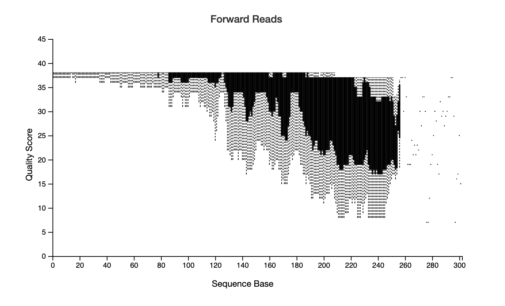 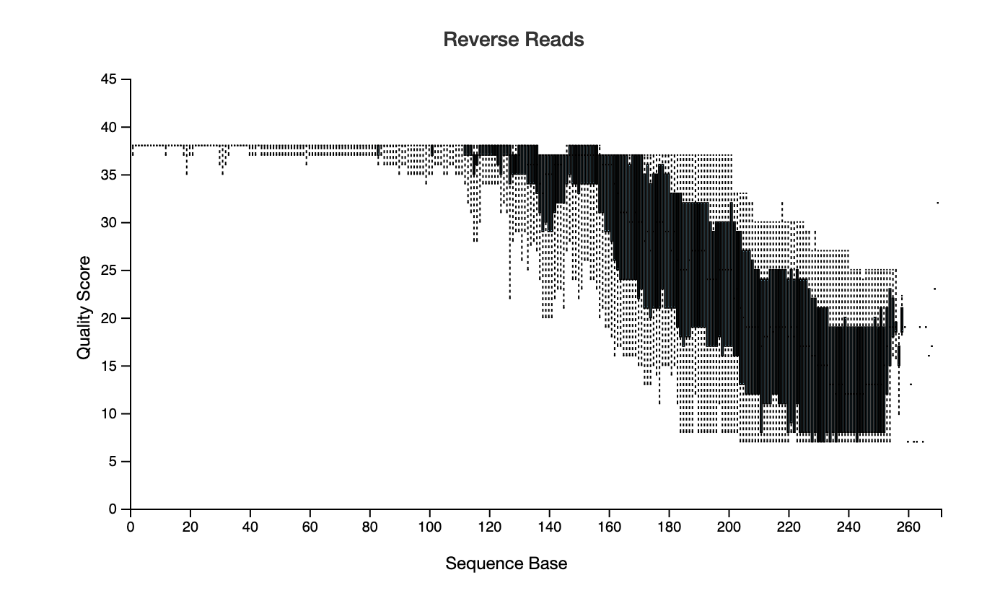 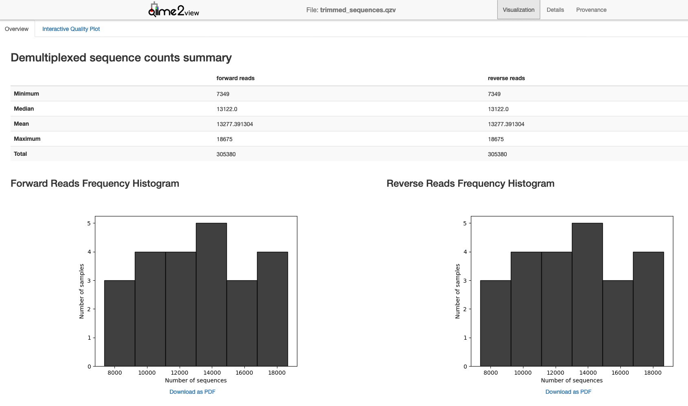
Alternatively, if you have QIIME2 locally installed and are running it on your own computer, you can view the visualisation from the command-line:
qiime tools view analysis/visualisations/trimmed_sequences.qzv
Denoising the data¶
Trimmed sequences are now quality assessed using the dada2 plugin within QIIME2. dada2 denoises data by modelling and correcting Illumina-sequenced amplicon errors, and infers exact amplicon sequence variants (ASVs), resolving differences of as little as 1 nucleotide. Its workflow consists of filtering, de-replication, reference‐free chimera detection, and paired‐end reads merging, resulting in a feature or ASV table.
Note
This step may long time to run (i.e. days), depending on files sizes and computational power.
Remember to adjust p-trunc-len-f and p-trunc-len-r values according to your own data.
Question: Based on your assessment of the quality plots from the p-trunc-len-f and p-trunc-len-r in the command below?
Answer
p-trunc-len-f 212 and p-trunc-len-r 167
The specified output directory must not pre-exist.
qiime dada2 denoise-paired \
--i-demultiplexed-seqs analysis/seqs_trimmed/trimmed_sequences.qza \
--p-trunc-len-f xx \
--p-trunc-len-r xx \
--p-n-threads 0 \
--output-dir analysis/dada2out \
--verbose
Generate summary files¶
A metadata file is required which provides the key to gaining biological insight from your data. The file
Things to look for:
- How many features (ASVs) were generated? Are the communities high or low diversity?
- Do BLAST searches of the representative sequences make sense? Are the features what you would expect e.g. marine or terrestrial?
- Have a large number (e.g. >50%) of sequences been lost during denoising/filtering? If so, the settings might be too stringent.
qiime feature-table summarize \
--i-table analysis/dada2out/table.qza \
--m-sample-metadata-file metadata.tsv \
--o-visualization analysis/visualisations/16s_table.qzv \
--verbose
Copy analysis/visualisations/16s_table.qzv to your local computer and view in QIIME 2 View (q2view).
Visualisations: ASVs summary
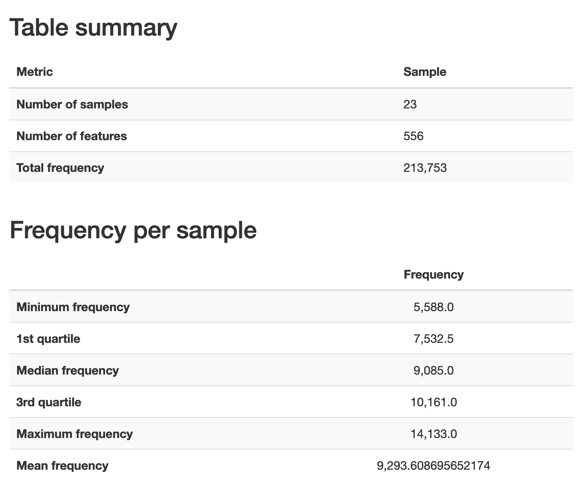 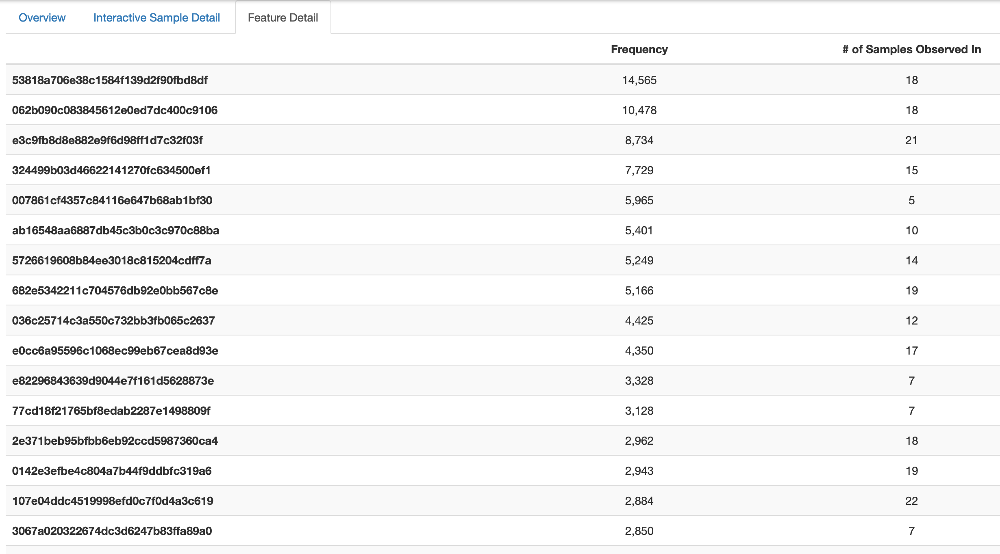
qiime feature-table tabulate-seqs \
--i-data analysis/dada2out/representative_sequences.qza \
--o-visualization analysis/visualisations/16s_representative_seqs.qzv \
--verbose
Copy analysis/visualisations/16s_rep_seqs.qzv to your local computer and view in QIIME 2 View (q2view).
Visualisation: Representative Sequences
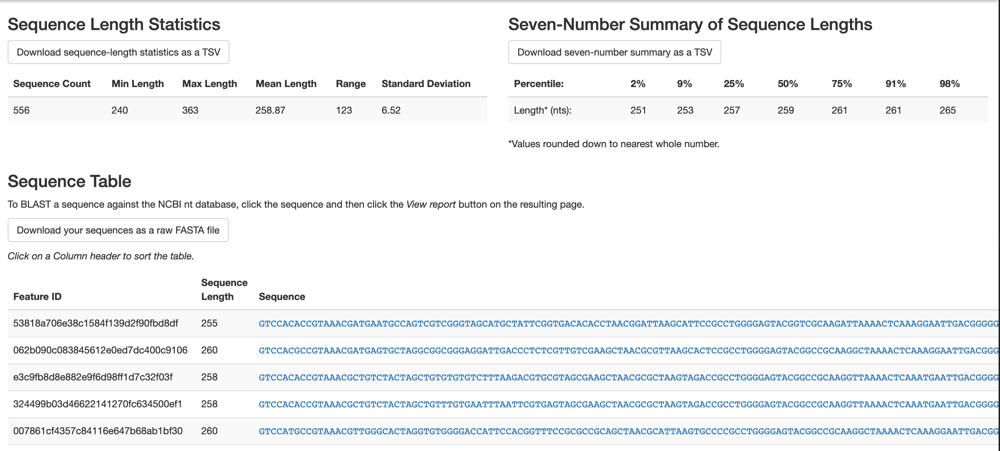
qiime metadata tabulate \
--m-input-file analysis/dada2out/denoising_stats.qza \
--o-visualization analysis/visualisations/16s_denoising_stats.qzv \
--verbose
Copy analysis/visualisations/16s_denoising_stats.qzv to your local computer and view in QIIME 2 View (q2view).
Visualisation: dada2 output
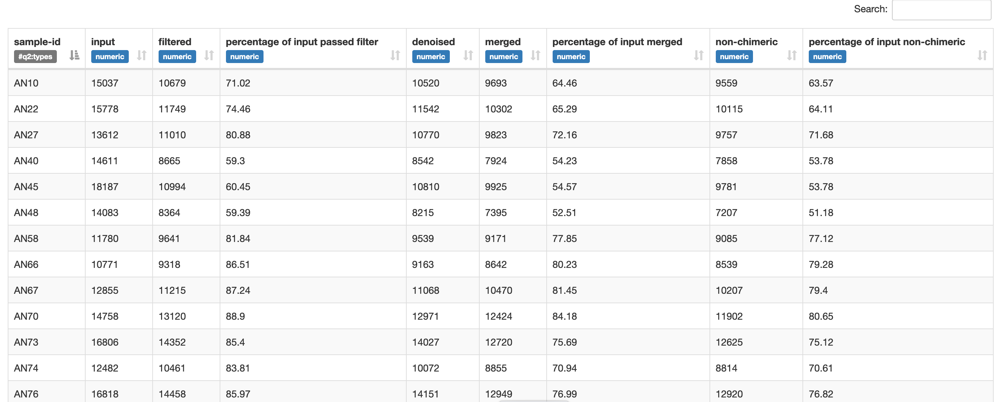
Section 2: Taxonomic Analysis¶
Assign taxonomy¶
Here we will classify each identical read or Amplicon Sequence Variant (ASV) to the highest resolution based on a database. Common databases for bacteria datasets are Greengenes, SILVA, Ribosomal Database Project, or Genome Taxonomy Database. See Porter and Hajibabaei, 2020 for a review of different classifiers for metabarcoding research. The classifier chosen is dependent upon:
- Previously published data in a field
- The target region of interest
- The number of reference sequences for your organism in the database and how recently that database was updated.
A classifier has already been trained for you for the V5V6 region of the bacterial 16S rRNA gene using the SILVA database. The next step will take a while to run. The output directory cannot previously exist.
n_jobs = 1 This runs the script using all available cores
Note
The classifier used here is only appropriate for the specific 16S rRNA region that this data represents. You will need to train your own - no worries, QIIME2 has a tutorial for that.
qiime feature-classifier classify-sklearn \
--i-classifier silva_132_16s_v5v6_classifier.qza \
--i-reads analysis/dada2out/representative_sequences.qza \
--p-n-jobs 1 \
--output-dir analysis/taxonomy \
--verbose
Warning
This step often runs out of memory on full datasets. Some options are to change the number of cores you are using (adjust --p-n-jobs) or add --p-reads-per-batch 10000 and try again. The QIIME 2 forum has many threads regarding this issue so always check there was well.
Generate a viewable summary file of the taxonomic assignments.¶
qiime metadata tabulate \
--m-input-file analysis/taxonomy/classification.qza \
--o-visualization analysis/visualisations/taxonomy.qzv \
--verbose
Copy analysis/visualisations/taxonomy.qzv to your local computer and view in QIIME 2 View (q2view).
Visualisation: Taxonomy
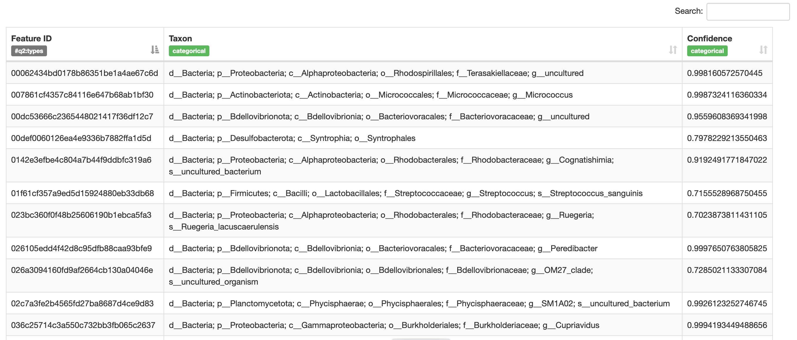
Filtering¶
Filter out reads classified as mitochondria and chloroplast. Unassigned ASVs are retained. Generate a viewable summary file of the new table to see the effect of filtering.
According to QIIME developer Nicholas Bokulich, low abundance filtering (i.e. removing ASVs containing very few sequences) is not necessary under the ASV model.
qiime taxa filter-table \
--i-table analysis/dada2out/table.qza \
--i-taxonomy analysis/taxonomy/classification.qza \
--p-exclude Mitochondria,Chloroplast \
--o-filtered-table analysis/taxonomy/16s_table_filtered.qza \
--verbose
qiime feature-table summarize \
--i-table analysis/taxonomy/16s_table_filtered.qza \
--m-sample-metadata-file metadata.tsv \
--o-visualization analysis/visualisations/16s_table_filtered.qzv \
--verbose
Copy analysis/visualisations/16s_table_filtered.qzv to your local computer and view in QIIME 2 View (q2view).
Visualisation: 16s_table_filtered
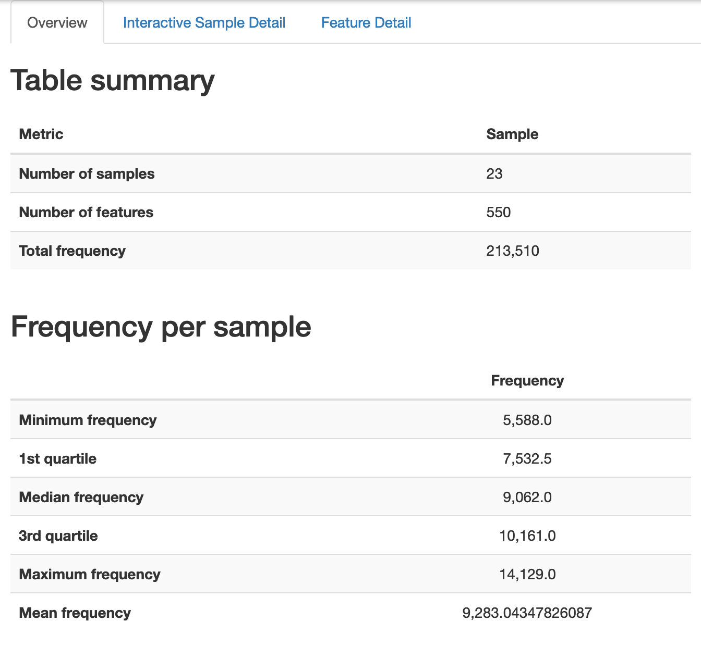
Section 3: Build a phylogenetic tree¶
The next step does the following:
- Perform an alignment on the representative sequences.
- Mask highly variable regions of the alignment.
- Generate a phylogenetic tree.
- Apply mid-point rooting to the tree.
A phylogenetic tree is necessary for any analyses that incorporates information on the relative relatedness of community members, by incorporating phylogenetic distances between observed organisms in the computation. This would include any beta-diversity analyses and visualisations from a weighted or unweighted Unifrac distance matrix.
mkdir analysis/tree
Use one thread only (which is the default action) so that identical results can be produced if rerun.
qiime phylogeny align-to-tree-mafft-fasttree \
--i-sequences analysis/dada2out/representative_sequences.qza \
--o-alignment analysis/tree/aligned_16s_representative_seqs.qza \
--o-masked-alignment analysis/tree/masked_aligned_16s_representative_seqs.qza \
--o-tree analysis/tree/16s_unrooted_tree.qza \
--o-rooted-tree analysis/tree/16s_rooted_tree.qza \
--p-n-threads 1 \
--verbose
Section 4: Basic visualisations and statistics¶
Rarefaction curves¶
Generate rarefaction curves to determine whether the samples have been sequenced deeply enough to capture all the community members. The max depth setting will depend on the number of sequences in your samples.
Things to look for:
- Do the curves for each sample plateau? If they don’t, the samples haven’t been sequenced deeply enough to capture the full diversity of the bacterial communities, which is shown on the y-axis.
- At what sequencing depth (x-axis) do your curves plateau? This value will be important for downstream analyses, particularly for alpha diversity analyses.
Make a directory for downstream analysis results.
mkdir analysis/downstream
Note
The value that you provide for –p-max-depth should be determined by reviewing the “Frequency per sample” information presented in the
qiime diversity alpha-rarefaction \
--i-table analysis/taxonomy/16s_table_filtered.qza \
--i-phylogeny analysis/tree/16s_rooted_tree.qza \
--p-max-depth 9062 \
--m-metadata-file metadata.tsv \
--o-visualization analysis/visualisations/16s_alpha_rarefaction.qzv \
--verbose
Copy analysis/visualisations/16s_alpha_rarefaction.qzv to your local computer and view in QIIME 2 View (q2view).
Visualisation: Rarefaction
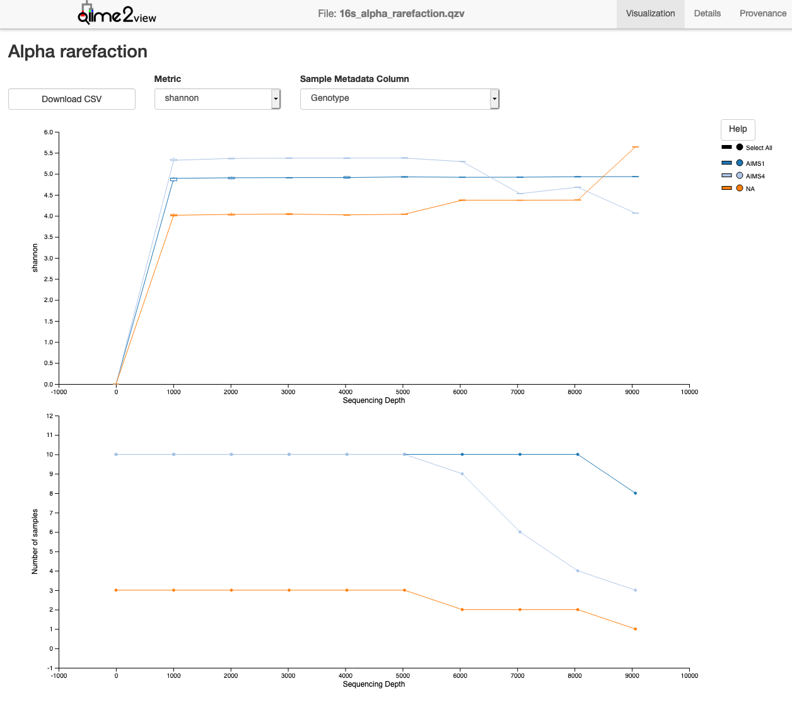
ASV relative abundance bar charts¶
Create bar charts to compare the relative abundance of ASVs across samples.
qiime taxa barplot \
--i-table analysis/taxonomy/16s_table_filtered.qza \
--i-taxonomy analysis/taxonomy/classification.qza \
--m-metadata-file metadata.tsv \
--o-visualization analysis/visualisations/barchart.qzv \
--verbose
Copy analysis/visualisations/barchart.qzv to your local computer and view in QIIME 2 View (q2view). Try selecting different taxonomic levels and metadata-based sample sorting.
Visualisations: Taxonomy Barplots
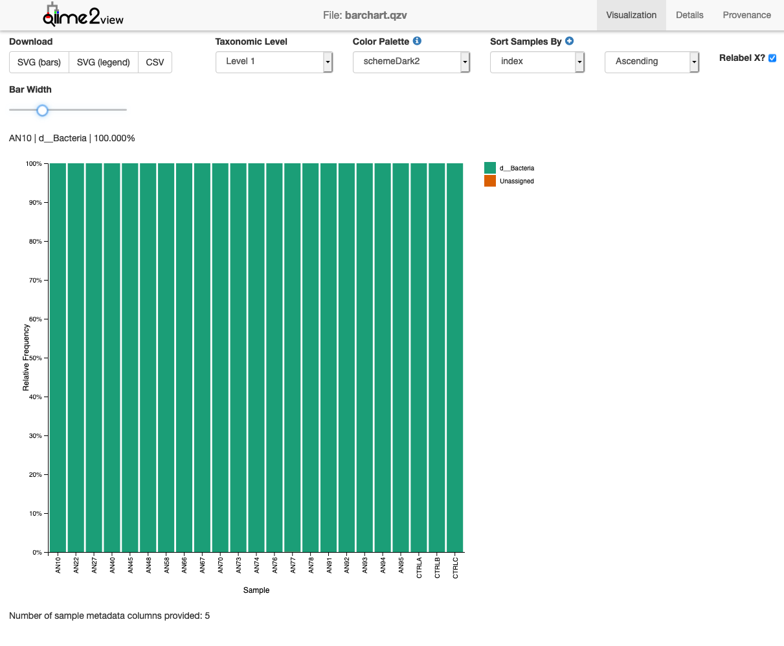
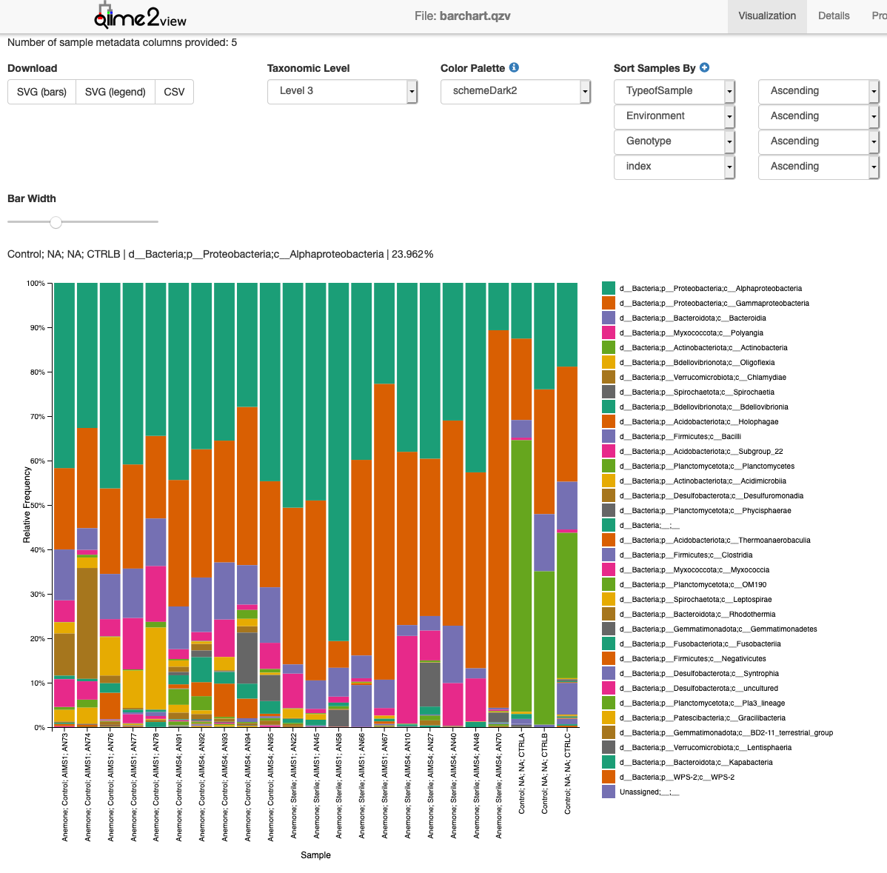
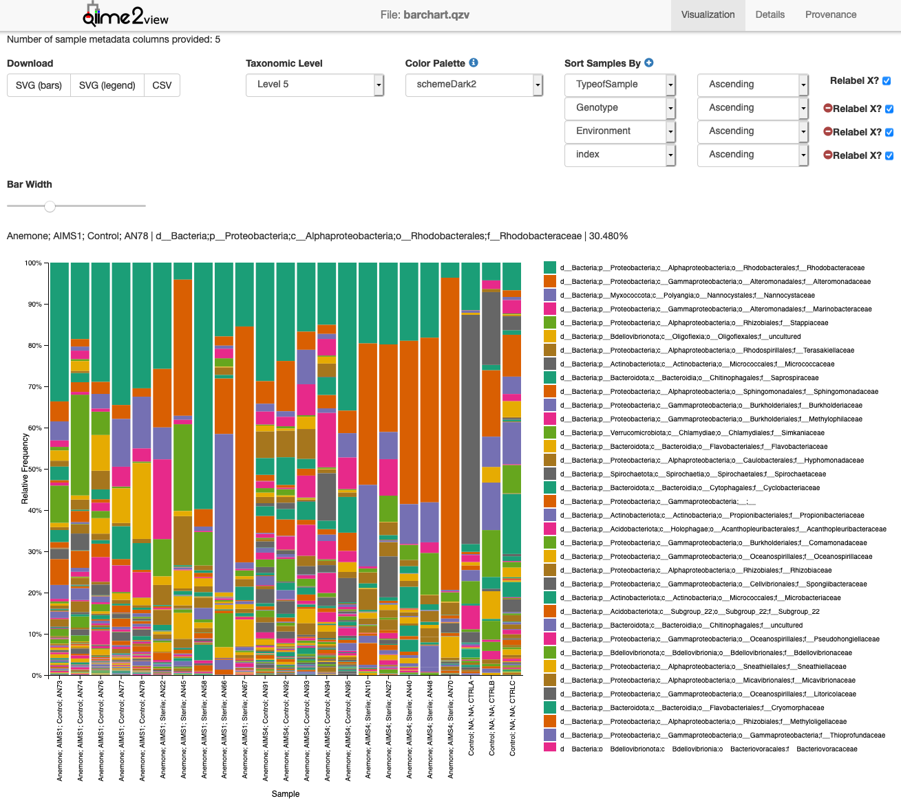
Alpha and beta diversity analysis¶
The following is taken directly from the Moving Pictures tutorial and adapted for this data set. QIIME 2’s diversity analyses are available through the q2-diversity plugin, which supports computing alpha- and beta- diversity metrics, applying related statistical tests, and generating interactive visualisations. We’ll first apply the core-metrics-phylogenetic method, which rarefies a FeatureTable[Frequency] to a user-specified depth, computes several alpha- and beta- diversity metrics, and generates principle coordinates analysis (PCoA) plots using Emperor for each of the beta diversity metrics.
The metrics computed by default are:
- Alpha diversity (operate on a single sample (i.e. within sample diversity)).
- Shannon’s diversity index (a quantitative measure of community richness)
- Observed OTUs (a qualitative measure of community richness)
- Faith’s Phylogenetic Diversity (a qualitative measure of community richness that incorporates phylogenetic relationships between the features)
- Evenness (or Pielou’s Evenness; a measure of community evenness)
- Beta diversity (operate on a pair of samples (i.e. between sample diversity)).
- Jaccard distance (a qualitative measure of community dissimilarity)
- Bray-Curtis distance (a quantitative measure of community dissimilarity)
- unweighted UniFrac distance (a qualitative measure of community dissimilarity that incorporates phylogenetic relationships between the features)
- weighted UniFrac distance (a quantitative measure of community dissimilarity that incorporates phylogenetic relationships between the features)
An important parameter that needs to be provided to this script is --p-sampling-depth, which is the even sampling (i.e. rarefaction) depth that was determined above. As most diversity metrics are sensitive to different sampling depths across different samples, this script will randomly subsample the counts from each sample to the value provided for this parameter. For example, if --p-sampling-depth 500 is provided, this step will subsample the counts in each sample without replacement, so that each sample in the resulting table has a total count of 500. If the total count for any sample(s) are smaller than this value, those samples will be excluded from the diversity analysis. Choosing this value is tricky. We recommend making your choice by reviewing the information presented in the
qiime diversity core-metrics-phylogenetic \
--i-phylogeny analysis/tree/16s_rooted_tree.qza \
--i-table analysis/taxonomy/16s_table_filtered.qza \
--p-sampling-depth 5588 \
--m-metadata-file metadata.tsv \
--output-dir analysis/diversity_metrics
Copy the .qzv files created from the above command into the visualisations subdirectory.
cp analysis/diversity_metrics/*.qzv analysis/visualisations
To view the differences between sample composition using unweighted UniFrac in ordination space, copy analysis/visualisations/weighted_unifrac_emperor.qzv to your local computer and view in QIIME 2 View (q2view).
Visualisations: Weighted UniFrac Emperor Ordination
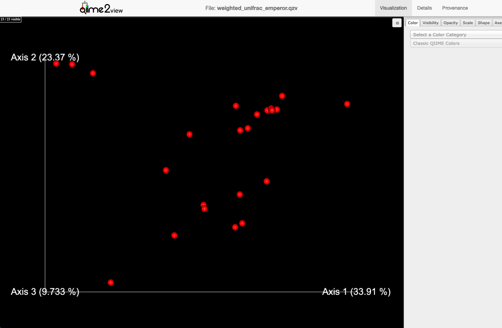
On q2view, select the “Colour” tab and the heading “Environment” in the dropdown menu and then by “Genotype” in the “Shape” tab.
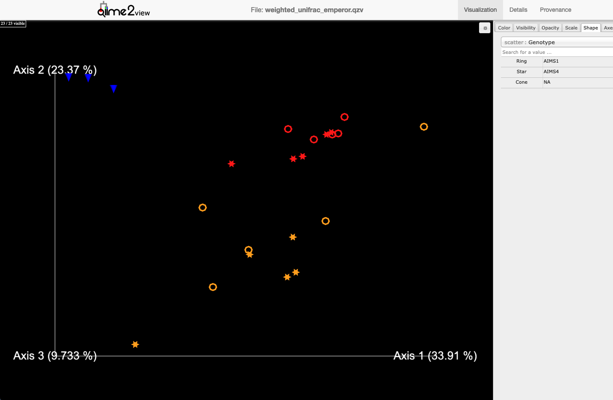
Next, we’ll test for associations between categorical metadata columns and alpha diversity data. We’ll do that here for the Faith Phylogenetic Diversity (a measure of community richness) and evenness metrics.
qiime diversity alpha-group-significance \
--i-alpha-diversity analysis/diversity_metrics/faith_pd_vector.qza \
--m-metadata-file metadata.tsv \
--o-visualization analysis/visualisations/faith-pd-group-significance.qzv
Copy analysis/visualisations/faith-pd-group-significance.qzv to your local computer and view in QIIME 2 View (q2view).
Visualisation: Faith Phylogenetic Diversity output
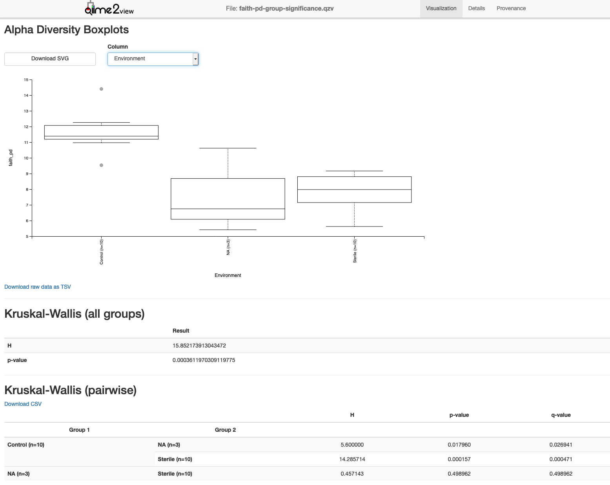
qiime diversity alpha-group-significance \
--i-alpha-diversity analysis/diversity_metrics/evenness_vector.qza \
--m-metadata-file metadata.tsv \
--o-visualization analysis/visualisations/evenness-group-significance.qzv
Copy analysis/visualisations/evenness-group-significance.qzv to your local computer and view in QIIME 2 View (q2view).
Visualisation: Evenness output
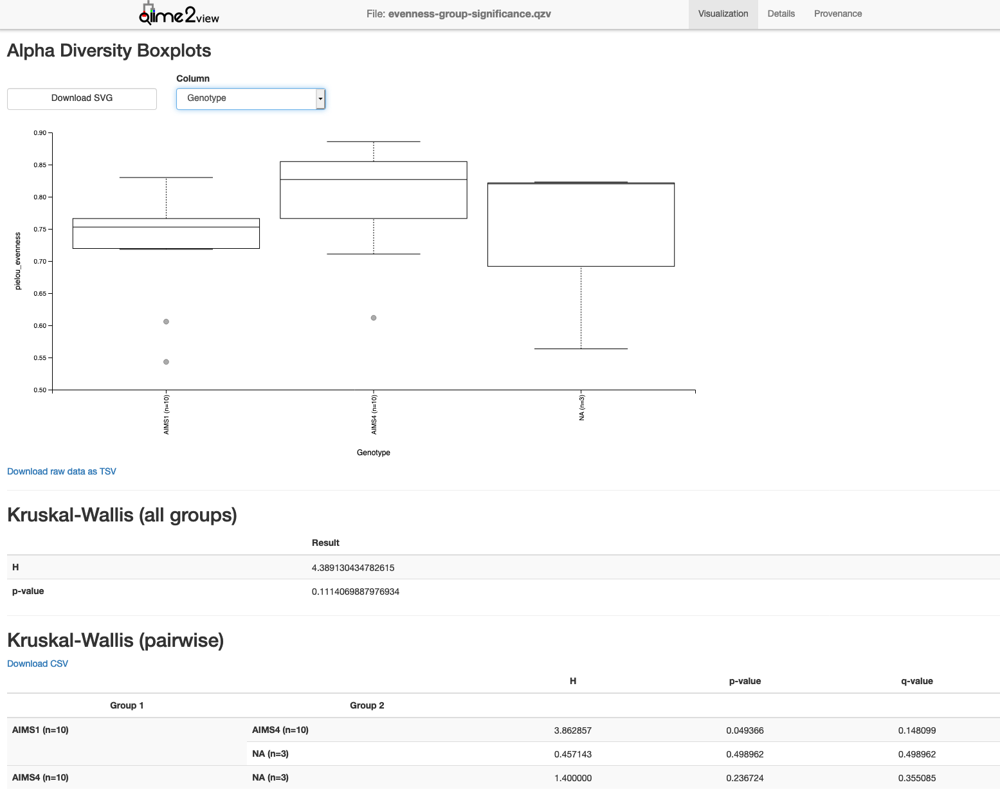
Finally, we’ll analyse sample composition in the context of categorical metadata using a permutational multivariate analysis of variance (PERMANOVA, first described in Anderson (2001)) test using the beta-group-significance command. The following commands will test whether distances between samples within a group, such as samples from the same genotype, are more similar to each other then they are to samples from the other groups. If you call this command with the --p-pairwise parameter, as we’ll do here, it will also perform pairwise tests that will allow you to determine which specific pairs of groups (e.g., AIMS1 and AIMS4) differ from one another, if any. This command can be slow to run, especially when passing --p-pairwise, since it is based on permutation tests. So, unlike the previous commands, we’ll run beta-group-significance on specific columns of metadata that we’re interested in exploring, rather than all metadata columns to which it is applicable. Here we’ll apply this to our unweighted UniFrac distances, using two sample metadata columns, as follows.
qiime diversity beta-group-significance \
--i-distance-matrix analysis/diversity_metrics/unweighted_unifrac_distance_matrix.qza \
--m-metadata-file metadata.tsv \
--m-metadata-column Genotype \
--o-visualization analysis/visualisations/unweighted-unifrac-genotype-significance.qzv \
--p-pairwise
Copy analysis/visualisations/unweighted-unifrac-genotype-significance.qzv to your local computer and view in QIIME 2 View (q2view).
Visualisation: Genotype significance output
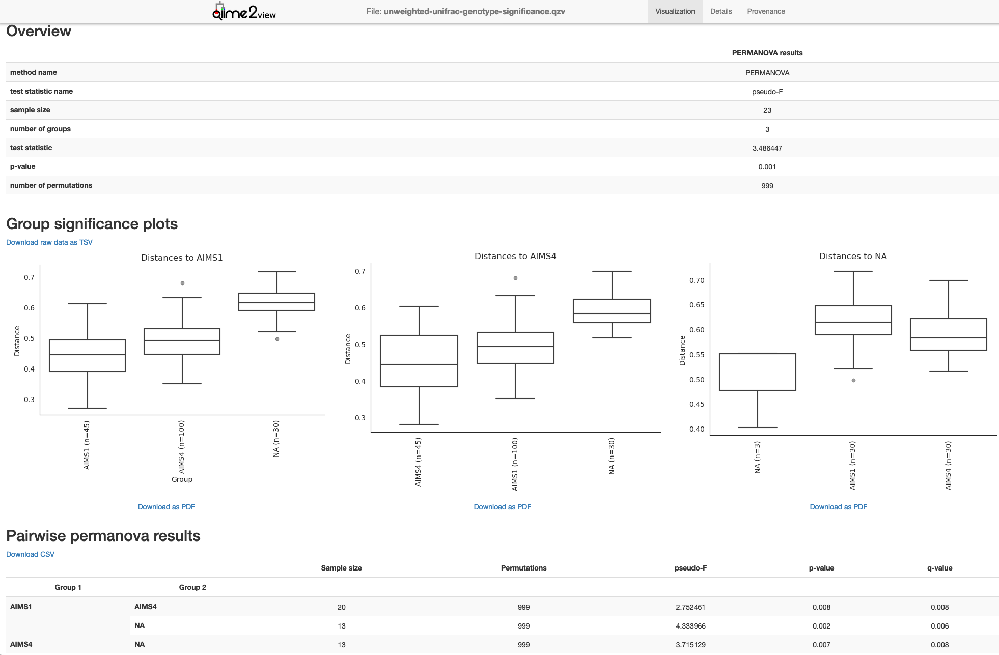
qiime diversity beta-group-significance \
--i-distance-matrix analysis/diversity_metrics/unweighted_unifrac_distance_matrix.qza \
--m-metadata-file metadata.tsv \
--m-metadata-column Environment \
--o-visualization analysis/visualisations/unweighted-unifrac-environment-significance.qzv \
--p-pairwise
Copy analysis/visualisations/unweighted-unifrac-environment-significance.qzv to your local computer and view in QIIME 2 View (q2view).
Visualisation: Environmental significance output
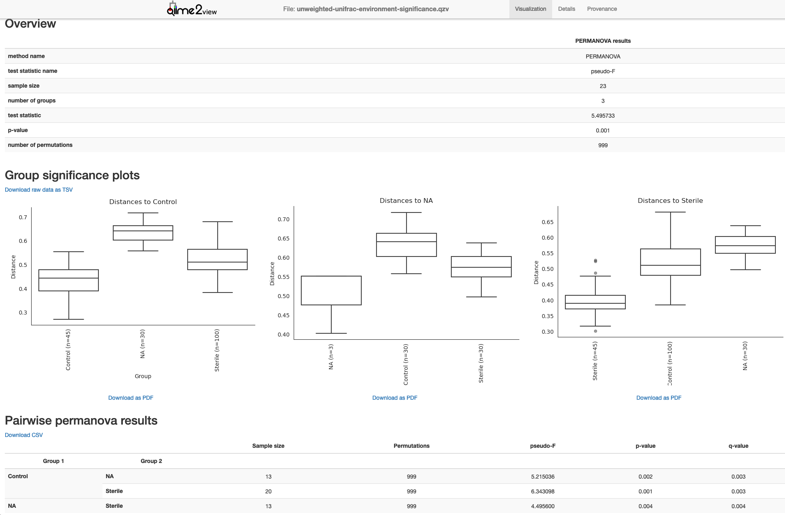
Section 5: Exporting data for further analysis in R¶
You need to export your ASV table, taxonomy table, and tree file for analyses in R. Many file formats can be accepted.
Export unrooted tree as .nwk format as required for the R package phyloseq.
qiime tools export \
--input-path analysis/tree/16s_unrooted_tree.qza \
--output-path analysis/export
Create a BIOM table with taxonomy annotations. A FeatureTable[Frequency] artefact will be exported as a BIOM v2.1.0 formatted file.
qiime tools export \
--input-path analysis/taxonomy/16s_table_filtered.qza \
--output-path analysis/export
Then export BIOM to TSV
biom convert \
-i analysis/export/feature-table.biom \
-o analysis/export/feature-table.tsv \
--to-tsv
Export Taxonomy as TSV
qiime tools export \
--input-path analysis/taxonomy/classification.qza \
--output-path analysis/export
Delete the header lines of the .tsv files
sed '1d' analysis/export/taxonomy.tsv > analysis/export/taxonomy_noHeader.tsv
sed '1,2d' analysis/export/feature-table.tsv > analysis/export/feature-table_noHeader.tsv
Some packages require your data to be in a consistent order, i.e. the order of your ASVs in the taxonomy table rows to be the same order of ASVs in the columns of your ASV table. It’s recommended to clean up your taxonomy file. You can have blank spots where the level of classification was not completely resolved.